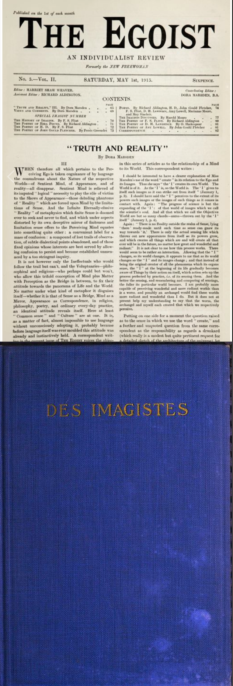

Peckham
Poetry
Group
Poetry
Group
/// PPG
PPG 001
"The Image is More Than an Idea. It is a Vortex..."
Imagism · October 2023 · Peckham Library

In October we read a collection of poetry from the Imagists, the words lit by LED candles. Starting with Ezra Pound's "In a Station of the Metro."
We reflected on Pound's retrospective. In the act of writing, he wrote: "Only emotion endures. Surely it is better for me to name over the few beautiful poems that still ring in my head than for me to search my flat for back numbers of periodicals."
From there, collectively, to a piece he mentioned: Alice Corbin's "One City Only," specifically its enduring ending. "But sliding water over a stone. These things have worn smooth in my head and I am not through with them."
We discussed the haiku and the influence of Japanese translation on Pound and the Imagists. Then passed the microphone around to take turns reading H.D.'s work, mysterious and precise. We read an excerpt from F.S. Flint describing her as an "accurate mystery; her work is clear and yet opaque, the images easy to visualise, but their ultimate meaning left tantalisingly ambiguous." (1914)

We read excerpts from The Egoist (1915) and looked to BLAST and The New Age, publications thrashing out new poetic forms and analysis. The Egoist and The New Age are ones we return to again and again.
Poems in the session
- Ezra Pound — In a Station of the Metro
- Ezra Pound — The Garden
- H.D. — Oread
- H.D. — Heat
- H.D. — Storm
- Alice Corbin — One City Only
- Amy Lowell — In a Garden
- F.S. Flint — Tube
- Richard Aldington — In France